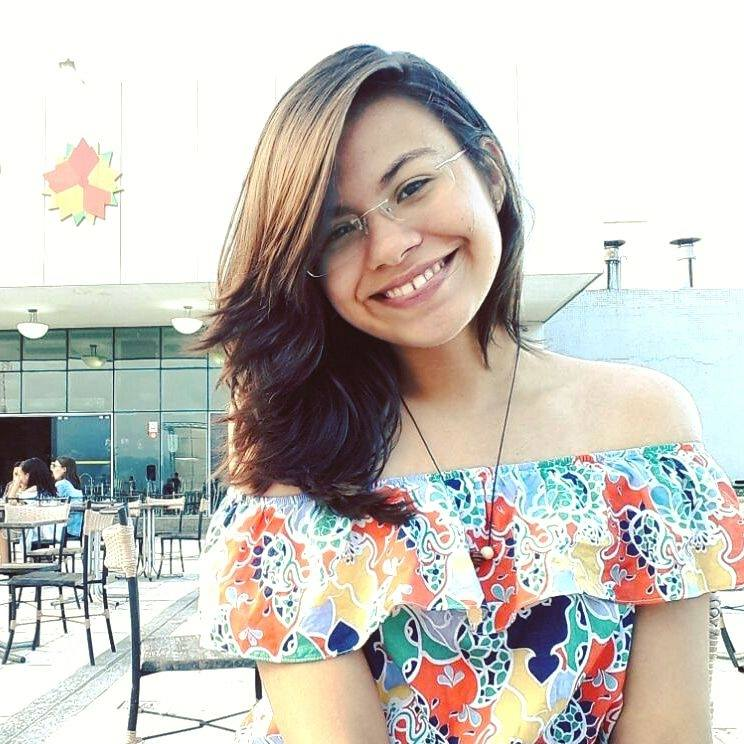

Quem sou.
Tenho 19 anos, nascida e criada em Sobral. Atualmente, moro em Fortaleza e estou no 3º semestre em Sistemas e Mídias Digitais na Universidade Federal do Ceará - UFC. Me interesso muito por UI, UX. Admiro fotografia e de vez em quando, rabisco umas coisas, por pura diversão e você pode conferir aqui: https://www.instagram.com/nayarts_1/